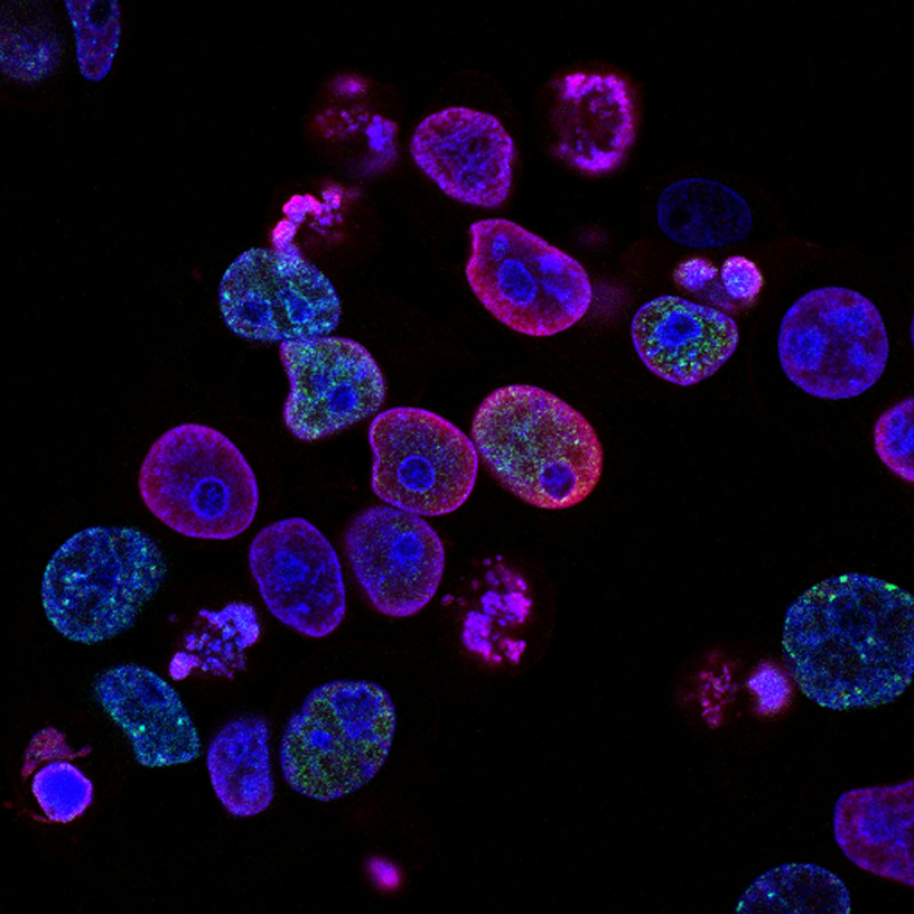

Analytical & testing services.
Method development, validation, and routine testing that establishes identity, purity, potency, and stability, the analytical backbone every dossier is built on.
Testing Snapshot
Where analytical work sits in a development programme.
Analytical data is the evidence layer under every claim a dossier makes, potency, purity, shelf life, and batch-to-batch consistency all rest on validated methods.

We develop and validate analytical procedures that are fit for their intended use, then run them as routine release, stability, and investigational testing with complete documentation.
Where a monograph exists, we verify the pharmacopoeial method in your matrix. Where one does not, we develop, optimise, and validate a method that will withstand review.
Methods That Survive Review
Every procedure is validated against specificity, accuracy, precision, linearity, range, robustness, and LOD/LOQ, with a validation report structured for direct inclusion in a submission.
What we deliver
Analytical support spans early characterisation through release testing support, QC testing and stability programmes.
Method Development
Chromatographic and spectroscopic method development for assay, related substances, and dissolution across dosage forms.
Method Validation & Verification
Analytical method development and validation in accordance with ICH Q2(R2), with method development principles aligned with ICH Q14, as applicable. Validation characteristics are selected according to the procedure’s intended purpose.
Release Testing Support & QC Testing
Identity, assay, uniformity, dissolution, and physical testing against agreed specifications with certificate-of-analysis reporting.
Stability Studies
Long-term, intermediate, accelerated, and photostability programmes with ICH storage conditions, sampling schedules, and trend evaluation.
Impurity & Residual Profiling
Related-substance profiling, degradation-product identification, residual solvents, and elemental impurity assessment.
Raw Material & Excipient Testing
Characterisation and compliance testing of APIs, excipients, botanicals, and packaging-contact materials.
Standards & methods
Testing follows the applicable pharmacopoeial monograph or a validated in-house method, with all raw data retained and reviewable.
| Activity | Guideline / standard | Typical output |
|---|---|---|
| Analytical method validation | ICH Q2(R2) · ICH Q14 | Validation protocol & report |
| Forced degradation / stability-indicating method development | ICH Q1A/Q1B principles, as applicable | Stability-indicating method evidence |
| Stability programme | ICH Q1A(R2) | Stability summary & shelf-life proposal |
| Residual solvents | ICH Q3C | Residual solvent report |
| Monograph testing | IP · BP · USP | Certificate of analysis |
How an engagement runs
Analytical engagements follow the same five-stage flow as every other BioVeritas study line.
Feasibility & Gap Analysis
Map existing data against your target submission; agree objectives, endpoints, and study-design options.
Protocol & Plan
Draft a guideline-aligned protocol with an analysis plan and explicit acceptance criteria.
Conduct
Run the work under quality oversight with contemporaneous data capture and in-process review.
Review & Interpret
Quality-reviewed data and documentation, statistics where relevant, and scientific interpretation, not just raw delivery.
Decision-Ready Report
A structured report and data package prepared with audit and agency review in mind.
Quality & data integrity
Work is conducted under quality-managed SOPs with ALCOA+ data-integrity principles. Raw data is captured contemporaneously, archived, and made available for sponsor and agency audit.
- Qualified partners: regulated work is conducted through qualified and appropriately accredited partner facilities, as applicable to the study.
- Independent review of protocols, conduct, and final reports before release.
- Traceable records: every result traces back to an explicit method and standard.
- Confidential by default: mutual NDA support, typically within 24 hours.